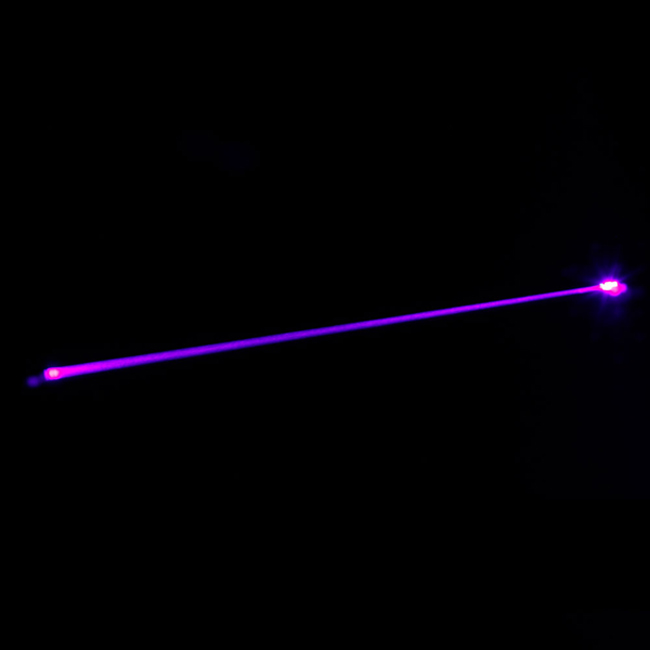
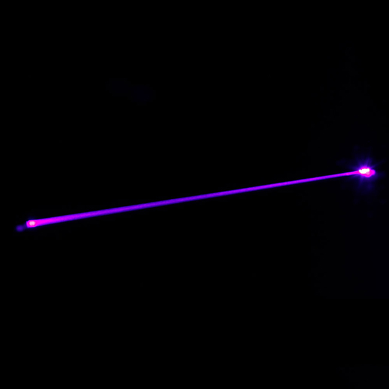
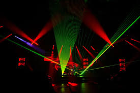
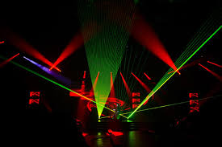

Lasers
The term “laser”, or originally, “LASER”, was intended as an acronym for “light amplification by stimulated emission of radiation”, and, as the name suggests, refers to a type of light which is optically amplified based on the stimulated emission of electromagnetic radiation. By projecting electromagnetic radiation (sometimes even another laser) into a tube containing mirrors, the radiation is amplified and allowed to escape as a highly-focused beam that can stay narrow for a very long distance, a process known as collimation. Lasers come in many forms, but what we presently know as a laser is actually about 60 years old.
 

Albert Einstein laid the foundation for the laser in a paper written in 1917 and based on early ideas of Max Planck. For the next 40 years, various scientists would use Planck's and Einstein's ideas to lay the foundation for the lasers that we know today. The predecessor to the laser was known as the maser. Masers use microwaves or radio waves to generate a highly-focused beam of electromagnetic radiation. The first laser as we know today was built in 1960 by Theodore H. Maiman, and was based on theoretical research by Charles Hard Townes and Arthur Leonard Schawlow. In the decades since 1960, continuous innovation has led to applications of laser technology in many fields outside of the lab.


Even though microwave and radio beams are known as masers due to their pre-existing status as such, higher wavelength beams are all known as lasers, including not only visible light, but infrared, ultraviolet, x-ray and even gamma rays. (It is important to note that gamma ray lasers are currently only theoretical constructs.) While the output of the system is fairly simple and straightforward (i.e. the laser beam), the process from which it is created is much more complex.
A laser beam's optical strength comes from a property known as coherence, which simply means that the waveform, frequency, and phase difference of the radiation emitted are all the same. Therefore, the energy from the laser does not scatter about in a random fashion like light from a lightbulb, but rather travels in a neat, almost linear fashion away from the source. A laser's classification depends on its wavelength, and discussion of all of the different types certainly goes beyond this writing, but it is important to know that lasers are more than just the little laser pointers on our keychains. (Laser pointers are, of course, great examples and illustrate an easy way to attain a working laser, available at almost any gift shop or discount store.)
Energy input, in the form of electromagnetic radiation ( 2 ) is fired into the gain medium ( 1 ) and in a process known as feedback, bounces inside the tube between the solid mirror ( 3 ) and the 95% mirror ( 4 ). Light emerges through the partially transparent 5% as a laser beam ( 5 ).
- Gain Medium-usually a tube shaped chamber to energize the light source
- Energy Input-effectively can be any radiation; officially between the infrared and X-ray spectrums
- High Reflector-mirror at the back of the tube used to reflect the energy source
- Output Coupler-also a mirror but at the front of the tube and with a small hole so that some light (the laser beam) may escape
- Laser Beam-the output
Parts of a Typical Laser:
Lasers have a wide range of applications, including laser surgery (including skin and eye treatments), entertainment (e.g. laser light shows), surveying (for a great level of precision), welding, laser printers, disk drives, DNA sequencing, fiber optics, and semiconductor chip manufacturing (a process known as photolithography).
As we progress into 2020 we are confronted with not only new innovations but new challenges. Lasers are certainly at the forefront of innovation and can therefore be used to solve many new problems of the present and future.

 

In this post-industrial revolution era, predicting the future even five years out is a nearly impossible task, and lasers, being a major component of scientific progression, are no exception. One thing that is almost without question though is that lasers will play a role in our future. Many concepts have been proposed in the scientific field for using lasers.
Laser propulsion is one example. The spacecraft uses a sail to harness the power of a laser fired at it, in much the same way that solar sails work. In another concept, a laser beam is used to direct the path and speed of a spacecraft. As the spacecraft travels along the beam, its speed increases, until speeds at which interstellar space travel is possible are reached. Still another concept involves using lasers to destroy or redirect asteroids that may be on a collision course with Earth. As laser technology advances, these ideas become closer to reality.

Many careers are open to those who are interested in lasers. Prerequisites for theoretical and experimental careers in lasers include rigorous studies in physics, science, and mathematics. Prerequisites for applied careers in lasers are a meticulous attention to detail, an interest in science, and mathematics courses.
Naturally, given the progression of scientific discovery, students must be advised that getting into a career of one's choice in the 21st Century is progressively harder due to the barriers to entry, one barrier being that computers and machines inevitably do many tasks that in the past were done by humans. So, we can infer that a deep understanding of Artificial Intelligence would be beneficial for a career in lasers.